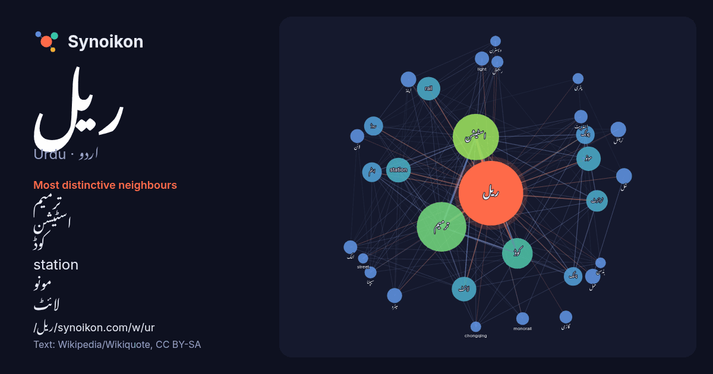

اردو · Urdu · word of the day list
ریل
“train” · The words found around it in 740 instances from Urdu Wikipedia, Wikiquote.

Most distinctive neighbours
- ترمیم 205×
- اسٹیشن 128×
- کوڈ 93×
- station 72×
- مونو 70×
- لائٹ 67×
- rail 65×
- ٹرانزٹ 54×
- ایٹم 43×
- چونگ 42×
- چنگ 41×
- روڈ 32×
- ٹرمینل 29×
- میٹرو 26×
- light 25×
- حمل 23×
- لنک 23×
- اسٹریٹ 21×
- monorail 21×
- اینڈ 20×
× = how many times more often than in general Urdu Wikipedia text.
Most frequent neighbours
- ترمیم 306
- اسٹیشن 267
- میں 240
- کوڈ 117
- station 76
- لائٹ 75
- مونو 74
- rail 68
- ٹرانزٹ 58
- کا 52
- ایٹم 48
- روڈ 45
- سے 45
- چنگ 43
- چونگ 43
- کو 35
- اس 31
- نقل 31
- اینڈ 30
- ٹرمینل 30
In context
- مشہور ہے ریل (Rail) اختیار کیا جاتا ہے اور عام طور پر اردو میں rail سے مراد Train اور railway دونوں کی لی جاتی ہے جبکہ rail track کو عمومی طور پر ریل کی پٹری Wikipedia snippets · پٹری
- ہلکی ریل (انگریزی: Light rail) یا لائٹ ریل ٹرانزٹ مخفف ایل آر ٹی (light rail transit / LRT) ریل نقل و حمل کا ایک نظام ہے جو ٹرام سے مشابہ ہوتا ہے۔ Light Wikipedia snippets · ہلکی ریل
- نیشنل ریل (انگریزی: National Rail) مملکت متحدہ کا ریل ڈلیوری گروپ کے استعمال کے لیے ایک تجارتی نام ہے۔ یہ انگلستان، اسکاٹ لینڈ اور ویلز کو ریل خدمات فراہم Wikipedia snippets · نیشنل ریل
- کومیوٹر ریل (انگریزی: Commuter rail) ایک مسافر ریل نقل و حمل ہے۔ Wikipedia snippets · کومیوٹر ریل
- میں ریل گاڑیاں چلنے لگیں۔ ہندوستان میں ریلوے کی تاریخ کا آغاز 1845ء سے ہوا۔ اس سال کلکتے سے رانی گنج بمبئی سے کلیان اورمدراس سے ارکونام تک تین ریل گاڑیاں Wikipedia snippets · ریل نقل و حمل
- وزیر ریل حکومت ہند کی وزارت ریل کا سربراہ ہوتا ہے اور اسے عموماً کابینی درجہ بخشا جاتا ہے۔ وزیر ریل بھارتی ریلوے کا ذمہ دار ہے جو دنیا کے عظیم ترین آجر Wikipedia snippets · وزیر ریل (بھارت)
- وزارت ریل حکومت ہند کی ایک وزارت ہے۔ Wikipedia snippets · وزارت ریل، حکومت ہند
- مختلف سمتوں سے آنے والی ریل گاڑیوں (پٹڑی) کا میل ہوتا ہے۔ ریل کی نقل و حمل کے تناظر میں، ایک ایسی جگہ ہے جس میں دو یا دو سے زائد ریل راستوں کا ملاپ ہو رہا Wikipedia snippets · جنکشن (ریل)
More Urdu words
Precomputed on 2026-10-09 with default settings (±5 words, medium corpus). The interactive map can refresh it with live data.